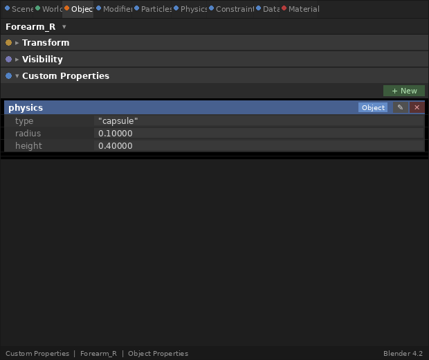

Metadata & Physics Extras: Automating the Pipeline
Beyond Geometry
A modern character pipeline is about more than just meshes and textures. It is about intent. When an artist rigs a character in Blender, they aren’t just positioning bones; they are defining how that character should interact with the world. In the "Simple Engine," we manually placed our entities and manually defined their properties. In an advanced character engine, this manual approach is a bottleneck that leads to errors and slow iteration times.
The glTF format provides a powerful but often overlooked feature for solving this: the extras field. This field is a catch-all container for custom JSON metadata that can be attached to any object in the glTF hierarchy—nodes, meshes, materials, and even animations. By leveraging these extras, we can create a data-driven pipeline where the artist’s work in the 3D tool automatically configures the engine’s behavior.
The Power of "Extras"
In a professional production, an artist shouldn’t have to write code to define where a character’s collision shapes go. Instead, they define them as custom properties in Blender. When the glTF is exported, these properties are embedded in the extras field of the corresponding node.
Adding Custom Properties in Blender
To attach physics metadata to a node, select the object or bone in Blender and navigate to the Properties panel → Object Properties → Custom Properties (or Bone Properties → Custom Properties for armature bones). Click New to add a property and name it physics. Set its value to a JSON-compatible dictionary using Blender’s property editor or a small Python script in the scripting workspace:
import bpy
obj = bpy.context.active_object
obj["physics"] = {"type": "capsule", "radius": 0.1, "height": 0.4}When you export via File → Export → glTF 2.0, enable Include → Custom Properties in the export dialog. Blender will serialize those properties into the extras field of the corresponding node in the output .glb / .gltf file.

| The screenshot above shows the Custom Properties panel in Blender 4.x. The panel location is the same in Blender 3.x. |
Consider a character’s forearm bone. In Blender, we can add a custom property called physics with a value that defines a capsule collider. When our engine parses the glTF, it doesn’t just see a bone node; it sees a request to attach a physical proxy.
// Example of extracting "extras" during node loading
void processNodeExtras(const tinygltf::Node& gltfNode, Node& engineNode) {
if (!gltfNode.extras.IsNull() && gltfNode.extras.IsObject()) {
if (gltfNode.extras.Has("physics")) {
const auto& physicsData = gltfNode.extras.Get("physics");
std::string type = physicsData.Get("type").Get<std::string>();
if (type == "capsule") {
float radius = static_cast<float>(physicsData.Get("radius").Get<double>());
float height = static_cast<float>(physicsData.Get("height").Get<double>());
// Populate the ColliderDef embedded in the Node.
// ColliderDef::half_height stores the capsule's *half*-height,
// so we halve the artist-facing "height" value from the extras.
engineNode.collider_def.shape = ColliderDef::Shape::CAPSULE;
engineNode.collider_def.radius = radius;
engineNode.collider_def.half_height = height * 0.5f;
}
}
}
}This approach bridges the gap between the visual and the physical. If the artist scales the character or adjusts the length of a limb, the physics proxy—and therefore the character’s collision behavior—updates automatically.
Automating the Skeleton-Physics Link
The most critical application of this metadata is the Kinematic-to-Dynamic link. For a character to react to physics (like a ragdoll), the physics engine needs to know which rigid bodies correspond to which bones in our Scene Graph.
By tagging nodes in the glTF as "physics-enabled," we can automate the creation of the entire ragdoll hierarchy. During the scene loading process, our engine can
-
Identify nodes with physics metadata.
-
Create corresponding rigid bodies in the physics world (PhysX, Jolt, or Bullet).
-
Establish the bi-directional syncing link we discussed in the previous section.
-
Generate physics constraints (like hinge or ball-and-socket joints) based on additional "joint_limit" metadata.
This automation ensures that our visual skeleton and our physical skeleton are always in perfect sync, without requiring a single line of hardcoded bone names or magic numbers in our engine core.
Production Benefits: Iteration Speed
The shift from manual setup to metadata-driven automation is a major leap in engine maturity. It transforms the engine from a static renderer into a flexible platform for artists.
-
Zero-Code Colliders: Artists can add, remove, or refine collision shapes without programmer intervention.
-
Asset-Specific Logic: Metadata can define surface types (e.g., "metal" vs. "flesh" for footstep sounds), interaction points ("grab_here" for a sword), or AI hints ("cover_node").
-
Validation: Because the metadata is part of the asset, it can be checked by the Khronos glTF-Validator, ensuring that every character in the game has a valid physics setup before it ever reaches the engine.
Summary
By leveraging glTF "extras," we’ve moved the responsibility of scene configuration from the programmer to the source asset. Our Scene Graph is no longer just a collection of matrices; it is a rich, annotated hierarchy that informs every system in our engine—from the renderer to the physics solver.
With our Scene Graph unified and our asset pipeline automated, we are ready to tackle the core of character movement: Advanced Skeletal & Compute Skinning. In the next chapter, we’ll move the heavy lifting of vertex deformation into Vulkan Compute shaders, enabling characters that are as performant as they are expressive.